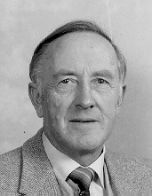

Born in 1922, with early years in Mitcham Victoria, (at the present address of the Mitcham Private Hospital!) the author is a graduate of Box Hill High School,
a World War II R.A.N.R. destroyer Signalman, and post-war
B.Com. (Melb.). After a variety of employment, including nursing and factory
work, Accountant and Company Secretary, he spent his final working years in the Commonwealth Taxation Office.
Never before involved in 'politics' he became engrossed, after 1975, with the possibility of a Real Democracy by the introduction of the Secret Ballot IN our Houses of Parliament, using a simple, electronic, secret-voting system. This concept is a burning, cleansing, 'chariot of fire' for our political system.
Once I was a Democrat!
But I found that, for every leader, from Chipp on, the interest in manipulative party power in parliament was primary. It still is, in all parties, small and great (even independents, in an open-voting parliament).
The unity of the nation behind a parliament of independent members, electing all the ministers (the best for each job), and their own prime minister (widely respected as the elder statesman), just did not appeal to any of them and still doesn't.
I was misled, but no more!
This party is dedicated to this important reform and democratic advance, at a time when our politicians are spending their energies in fighting each other for power, destroying the very 'democracy' which they so loudly acclaim.
To replace party politics, with non-partisan, cooperative parliamentary government (as e.g. Britain in wartime), we need the simple, but effective reform of secret ballots in all our parliaments.